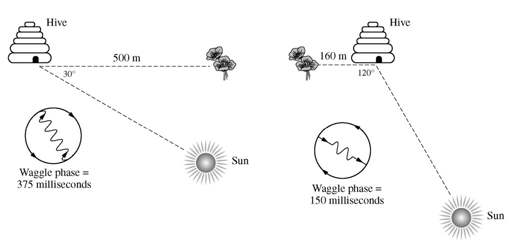

As depicted in the diagram, honeybees communicate the location of flower patches to members of their hives
with waggle dances that give information about the direction and distance to the flowers. Which of the following
statements about how honeybees communicate the position of flower patches is most consistent with the model?
When the flower is further away (500 m vs. 160 m), the waggle phase lasts longer (375 ms vs. 150 ms).
We are not given information on the number of repetitions of the waggle dance. Similarly, we are not given the area that a waggle dance covered.
The angle of the waggle phase is not correlated with the position of the flowers.
The waggle phase angles are similar, yet the the flowers face opposite directions from the hives in the diagram.